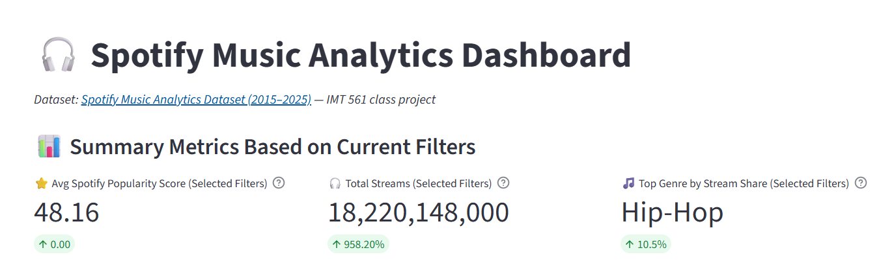
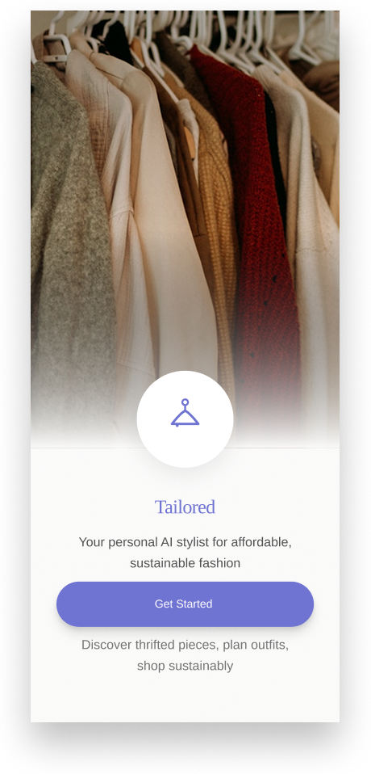

UX Designer • Research-driven • Inclusive experiences
Designing thoughtful digital products that feel clear, calm, and human.
I blend research, storytelling, and interaction design to create digital experiences that are accessible, intuitive, and grounded in real user needs.
Currently exploring
Human-centered UX for health, learning, and everyday tools.
Experience snapshot
A designer who turns complexity into clarity
My work focuses on translating research into thoughtful interactions, strong information architecture, and polished digital experiences.
Research-led design
I gather insights through interviews, usability testing, and synthesis to keep design decisions grounded in real behavior.
Accessible product thinking
I design with WCAG-informed principles so experiences remain usable and inclusive across a wide range of users.
Cross-functional collaboration
I enjoy working closely with stakeholders, developers, and researchers to turn ideas into products that feel polished and practical.
Selected work
Case-study style project highlights
Each project below opens into a dedicated page so the work is easier to explore and understand at a glance.

Data visualization • Dashboard
Spotify Music Analytics
An interactive dashboard that transforms streaming data into an understandable visual story for product and marketing teams.
- Structured the information architecture around clear decision-making tasks.
- Balanced visual hierarchy, accessibility, and responsive interaction patterns.
5+ usability rounds
Improved clarity in dashboard flow

Mobile app • AI styling
Tailored
A mobile experience that helps students make outfit decisions faster through personalized recommendations and less decision fatigue.
- Led research and concept exploration for a high-friction everyday experience.
- Focused on reducing cognitive load and strengthening confidence in styling choices.
40% faster choices
During early usability tests

Accessibility • Healthcare
InterpretAid
A patient-facing tool designed to improve understanding and communication during medical visits for users facing language or accessibility barriers.
- Centered the experience around trust, clarity, and inclusive communication.
- Shaped the app around vulnerable user needs rather than feature-first thinking.
12 users tested
Across 3 research rounds

Web app • Grocery planning
MarketMate
A responsive application that helps health-conscious shoppers compare products and make faster, more informed food decisions.
- Designed a streamlined shopping flow for complex product information.
- Integrated intuitive comparison patterns and collaborative list management.
3x faster comparisons
For product decision-making

Sustainability • Mobile design
Revivo
A mobile app that helps students make repair-versus-replace decisions with confidence while reducing unnecessary e-waste.
- Created a clearer decision journey for a sustainability-centered product.
- Mapped user needs into a calm, supportive experience that reduces friction.
2-step decision flow
Simplified repair guidance

Research • AI trust
When AI Lies With Confidence
A research-driven product concept that helps users evaluate AI-generated health information with greater caution and clarity.
- Translated complex research into a tangible experience and trust framework.
- Connected technical findings to user-facing clarity and product direction.
90% accuracy
In misinformation detection
Let’s build something meaningful
I’m open to UX design roles, collaborations, and thoughtful product challenges.
Whether you’re looking for a research-led designer, a product-minded collaborator, or someone to bring a thoughtful perspective into your team, I’d love to connect.